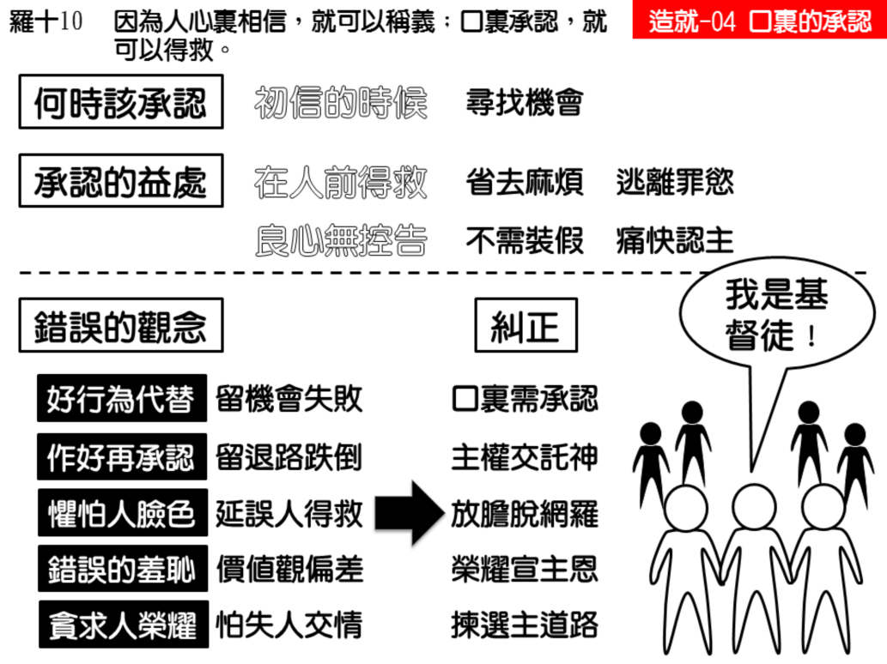

诗歌：259 首、补 848首
重要经文：
罗马书十章十节：因为人心里信，就得着义；口里承认，就得救。
箴言二十九章二十五节：惧怕人的陷入网罗，惟有信靠耶和华的，必得高举。
马太福音十章三十二至三十三节：凡在人面前，在我里面承认我的，我在我诸天之上的父面前，也必在他里面承认他；凡在人面前不认我的，我在我诸天之上的父面前，也必不认他。
纲目要点：
壹 口里承认的紧要：
一 一信主就要开口认耶稣为主。
二 “口里承认，就可以得救” 。
三 承认信耶稣了，就省去麻烦。
四 口不敢承认主，良心会有控告。
贰 需要纠正的错误：
一 以好行为代替口里承认。
二 怕无法彻底作基督徒。
三 怕人又怕羞。
四 贪求人的荣耀。
叁 承认主和主的承认：
一 “凡在人面前，在我里面承认我的，我在我诸天之上的父面前，也必在他里面承认他；”——太十32 。
二 “凡在人面前不认我的，我在我诸天之上的父面前，也必不认他。”太十33
三 “在人面前不认我的，人子在神的使者面前也必否认他。”——路十二9。
信息选读：
口里承认的紧要
人信了主，不应当隐藏，人信了主，必须口里承认主。口里承认主，是非常紧要的一件事。
一 一信主就要开口认耶稣为主
一个人一信主，就应当在人面前承认主。如果有人生了一个小孩子，一岁两岁都不会说话，三岁的时候还不会说话，那我们要怎么想？小的时候不会喊爸爸妈妈，恐伯一辈子都不会喊。照样，如果初信的人不在信主之后立刻承认主，恐怕要终身成为哑巴。我们不盼望有哑巴的信徒，所以，我们必须在一起头的时候，就学习开口。在起头如果不行，后来就难得有行的。所以初信的人总要寻找机会承认主。这一个承认是大事。这一个承认对于他大有益处。
二 “口里承认，就可以得救”
罗马书十章十节：“因为人心里信，就得着义；口里承认，就得救。”人如果心里相信，就可以称义，这是在神面前的事。口里承认，就可以得救，这是讲到在人面前的得救的问题。你信也罢，你不信也罢，这是在神面前的事，谁也看不见。你如果真的信，你在神面前就能够称义。可是，你心里信了，口里不说，人就不承认你是一个得救的人，人还把你算作不信的人，他们没有看见你和他们有什么分别。所以在圣经中很着重的对我们说，心里相信还不够，还必须口里承认，必须用口说出来。
三 承认信耶稣了，就省去麻烦
你心里相信，口里承认之后，就会得到很大的益处。这一个能使你省去将来许许多多的麻烦。你如果不开口说，“我已经跟从了主耶稣，我已经是属乎主的人；”无论如何，别人看你是和他们一样的人，结果，他们一有犯罪的事，一有情欲的事，就要把你算作他们中间的一分子。虽然你心里觉得你是一个基督徒，不好和他们混在一起，但是你又不能拒绝他们，你要讨他们的喜欢。你想出一个理由来拒绝，也许给你拒绝了。下一次，他们还是来拉你，你又得想出一个理由来推辞。你一次两次用理由、想法子拒绝，但是事情总不能过去。倒不如头一天就把牌子挂出去，承认你是信主的人。只要你一两次的承认，别人就不大会来勉强你。所以，你第一天就得宣布说，“我已经相信了主耶稣，我已经接受了主耶稣。”你这个牌子一挂出去，你的同事、你的同学、你的亲戚、你的家属，都知道你这一个人是这样的，你就省去了许多麻烦。
四 不承认主，良心有控告
如果你听见有人在那里恶意毁谤你的父母，说你的父母是怎样怎样的人，而你还能坐在那里听？何况我们的主舍了命，救了你，你能不说一句话，为着你所敬拜的、你所事奉的主么？人总得有胆量站起来，为着主承认说，“我是一个属乎主的人！”
需要纠正的错误
一 以好行为代替口里承认
有的初信的人，受了人遗传的教训，他们常常有一个错误，以为说：我这一个人应当有好的行为，这是要紧的；口里承认不承认不要紧。口里改变没有用，最要紧的是行为改变。这种错误的想法，我们要纠正。我们不是说行为不必改变。如果行为不改变，口说当然没有用。但是行为改变了，口不说也没有用。一个人行为的改变，绝不能代替口的承认。行为改变了，口还得承认。
二 怕基督徒作不到底
有的人要想，我口里一承认，如果我基督徒作不到底，岂不是要闹笑话么？也许过了三年五年，基督徒作不好了，那怎么办？所以，还是不说的好。等我过了几年，行了再说罢！我们可以对他说，你如果怕行为不行，怕跌倒，就不承认，我们有把握的说，你必定跌倒。因为你把后门开着，不想走大门。因为你先豫备好不承认，要等你靠得住了再承认。我们相当有把握的说，你必定要跌倒。
有一件事可以安慰我们的，就是神不只是拯救我们的神，神也是保守我们的神（犹一 24）。拯救好像什么？拯救好像把一件东西买回来。保守好像什么？保守好像把那一件东西摆在他自己手里。请问，世界上有几个人买东西是豫备丢掉的？我们把一只表买回来，是想用它五年十年，不是买回来就丢掉。神到处救人，祂不是要救一个丢一个，乃是要保守。神救了我们，就要保守我们。神把我们救回来，就要保守我们到那一天。神爱你到一个地步，肯舍弃祂的儿子拯救你回来。祂如果不保守你，就不会出这么大的代价。保守你，是神的旨意；保守你，是神的计画。你不要怕站起来说了“我是信主的，”过几天不行了，怎么办？请你不要自己挂虑，这个让神来负责好了。你还是简简单单的站起来说，“我是属神的。”你把你自己交托给神，神知道你这一个人需要扶持、安慰或者保守。我们有把握说，神必定保守人的得救；因为有保守，救赎才有意义。
承认主和主的承认
“凡在人面前，在我里面承认我的，我在我诸天之上的父面前，也必在他里面承认他。”太十 32。这一个比较有多大！你不过是在人面前承认你所信的这一位超过一切的人，是千万人中的第一人，说祂真是神的儿子。主却是在天父的面前、在神的使者面前承认你。你如果觉得在人面前承认这样的主是困难的事，那么到那一天，当主在父的荣耀里降临的时候，祂承认像你这样的人，也是何等困难的事。今天我们不要因怕人，（赛五一 12，）而不敢不在人面前承认主。今天我们如果觉得在人面前承认永生神的儿子耶稣基督有困难，那么到有一天，当我们的主回来的时候，祂在父的面前、在众荣耀的使者面前承认我们，也要觉得困难。这是何等严肃的一件事。但愿初信的弟兄姊妹，一开始就有胆量承认主，千万不要暗暗的作一个基督徒 。（摘自初信造就第四篇）
课程复习：
一 得救后，应何时开始向人公开承认？
二 公开承认后有哪些益处？
三 我们有哪些错误的观念需要纠正？
四 说明神的救赎与神的保守？
